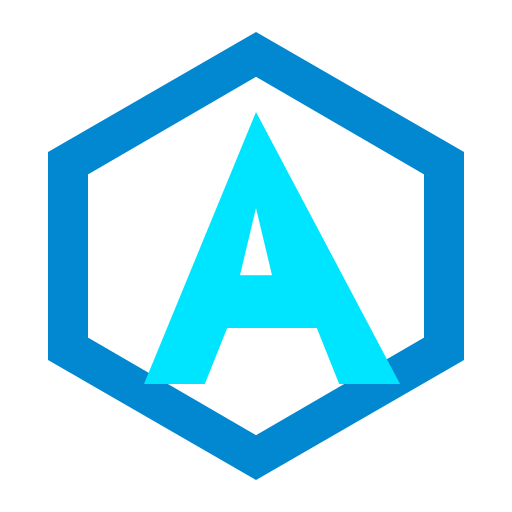

Quyidagi bir qatorli buyruq tizimingizni tekshiradi, zarur asboblarni tekshirib, Algo kompilyatori va standart kutubxonasini avtomatik sozlaydi.
tar -xzf algo-v1.5.0-linux-x86_64.tar.gzsudo cp bin/algo /usr/local/bin/mkdir -p ~/.algo && cp -r std ~/.algo/algo versiyamacOS foydalanuvchilari uchun yagona terminal orqali o'rnatish skripti. Xcode Command Line Tools va mahalliy muhitni avtomatik aniqlaydi.
xcode-select --install~/.local/bin ga joylashtiring:tar -xzf algo-v1.5.0-darwin-universal.tar.gzexport PATH="$HOME/.local/bin:$PATH"algo sinovWindows 10 yoki Windows 11 tizimida PowerShell orqali quyidagi bir qatorli buyruqni ishga tushiring. Skript WSL2 va mahalliy muhitni avtomatik sozlaydi.
irm https://raw.githubusercontent.com/alog-lan/algo/master/install.ps1 | iex%USERPROFILE%\.algo\bin manzilini avtomatik Windows PATH ga kiritadi.algo versiyaHar qanday operatsion tizimda hech narsa o'rnatmasdan Algo kompilyatorini darhol ishga tushirish uchun Docker tasviri.

To'liq o'zbekcha sintaksis ranglari, tezkor kod shablonlari (snippets) va fayllar uchun 3D Cyan Algo logotipi.